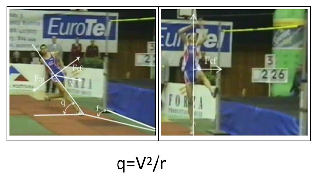

從 Pose Method 看跳高的動作技巧
跳高是競技運動中，比誰的離地距離最大。很多人以為他們要有強而有力的推蹬動作來向上跳，但其實他們是利用「失重」的技巧來跳得更高。前面好幾篇文章都提過「失重」是指失去體重，另一層涵義是「改變體重的方向」。
我們要把體重轉向你想要移動的方向。以跑步來說是「向前失重」，向前失重的幅度愈大(落下角度愈大)、速度愈快(角速度愈快)，跑步速度就會自然提升。以跳高來說是「向上失重」，也就是跳高選手比的是把體重轉向上方幅度與速度。
所以跳高的失重技巧是：把體重從跳高桿的外側「快速轉向」上方，所以從「幅度」上來說，跳高選手會聳肩、提臂與抬起內側腿；從「速度」上來說則是要快速聳肩、提臂與抬腿，而且最好同時，這才是跳得高的關鍵，不是單腳推蹬的動作。著地的那條腿，只是用來支撐地面。
支撐腳，當然還是要用力，但那是為了使體重在「快速轉向」的過程中支撐體重用的。(體重快速轉向的過程即簡稱為「失重」)
關於上述的跳高細部動作，可參考這部影片，解說的非常清楚：《High Jump Closer look at the high jump approach》，連結：
https://www.youtube.com/watch?v=__B7aTvFJ7U
從上述影片中可見，跳高的關鍵在於利用離心力使身體「向弧心傾斜」(傾向跳桿外側)，在來到最後一步時再快速把體重從外側轉向上方。外傾的角度愈大，「轉向時的失重效應就愈明顯」，當然腳部所承受的壓力也愈大，但那是被動壓力。這股壓力可達五倍體重。
選手跑經過的弧線的半徑愈大，他向圓心傾斜的角度也會愈大，到時向上失重的幅度也會愈大。但幅度愈大，速度時常會變慢，若能保持失重的速度(也就是向上聳肩、向上抬臂與抬腿的速度)，就能跳得更高。當然，前提是支撐腳要能有力撐住這股壓力。這股壓力，運動力學專家一般就稱為地面反作用力。
